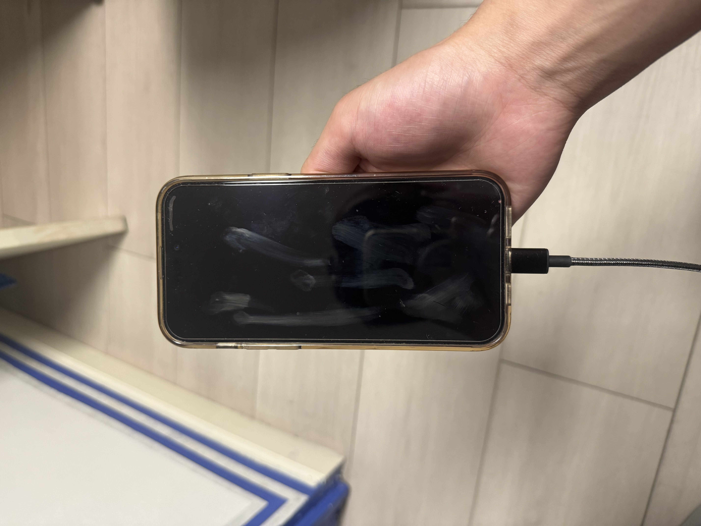
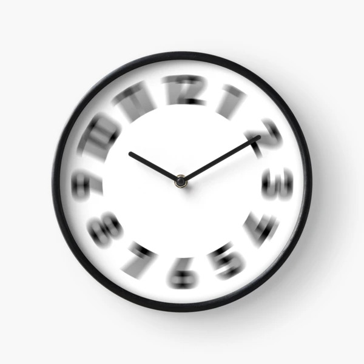
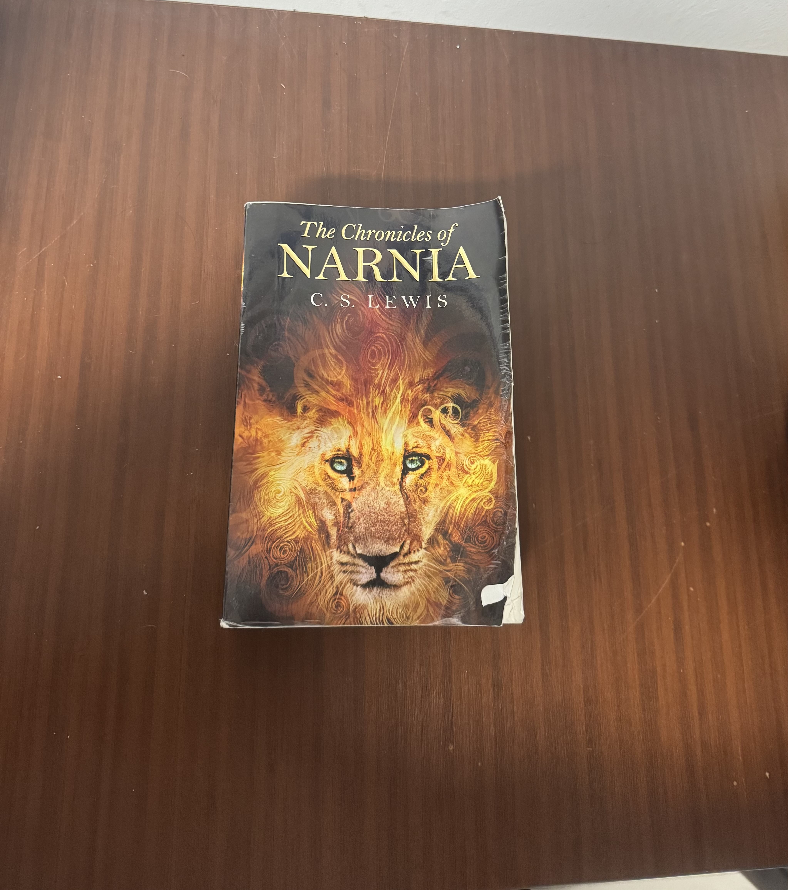
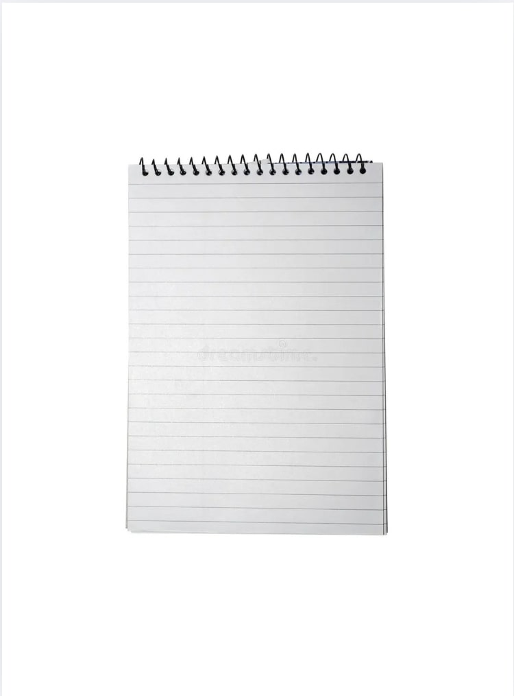

48-Hour YouTube Strike: My Journal

Phantom Clicks
Strike Journal
Day 1.1 • The Habit
Unbearable Silence
Strike Journal
Day 1.2 • The Void

Slowing Time
Strike Journal
Day 1.3 • The Restlessness

Small Victories
Strike Journal
Day 1.4 • The Replacement
Sudden Clarity
Strike Journal
Day 2.1 • The Change
Breaking the Loop
Strike Journal
Day 2.2 • The Freedom

The Final Verdict
Strike Journal
Day 2.3 • The Reflection
Reclaimed Attention
Strike Journal
Day 2.4 • The Realization